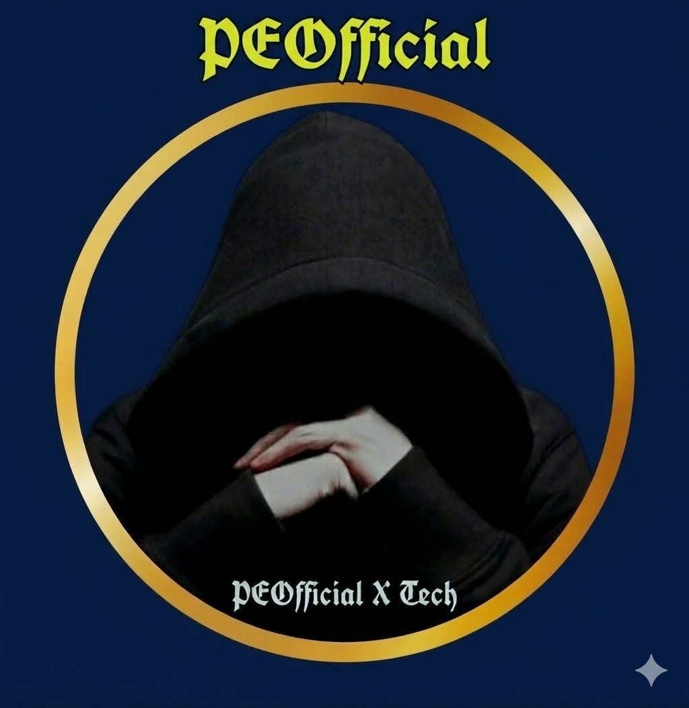

Ethical Hacker | Security Specialist | Cybersecurity
// SYSTEM INITIALIZED
Status: Active | Security Level: High
User: Operator
Location: Secure Node
PEOfficial Tech | Void Systems is a cybersecurity-focused platform built to analyze, detect, and secure digital environments. Our system is designed for ethical hacking, penetration testing, and vulnerability assessment.
We specialize in identifying security weaknesses, strengthening networks, and developing tools that help protect data and systems from attacks. Our approach combines automation, analysis, and modern security practices.
• Ethical Hacking & Security Testing
• Vulnerability Scanning
• Automation Scripts & Tools
• Network & System Protection
• Cybersecurity Solutions
Our mission is to strengthen digital security and empower systems with advanced protection techniques while maintaining ethical and responsible hacking practices.
This platform serves as a hub for tools, scripts, and cybersecurity knowledge. Explore the system, analyze the structure, and enhance your skills.
I help secure systems, detect vulnerabilities, and protect digital assets.